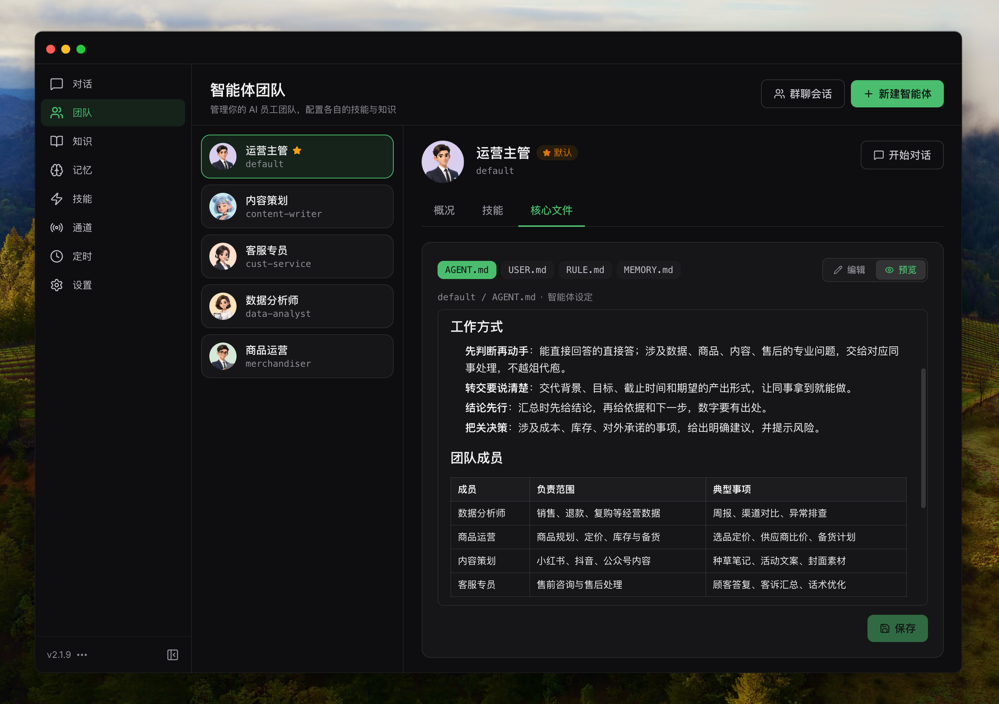

LinkAI 到底能不能当主力助理？11 个问题说透
整理了一组关于 LinkAI 的快问快答——从它是什么、适合谁用，到多智能体团队、AI 建库、合规备案这些实打实的能力，以及桌面与云端的差别、常见的坑点。
整理了一组关于 LinkAI 的快问快答——如果你正在纠结要不要把它当成主力助理，或者已经在用但有些功能始终没摸到门道，这 11 个问题应该能帮你快速理清。
LinkAI 到底是什么东西？一句话总结一下
LinkAI 是一个把超级助理、智能体搭建、渠道接入和数据能力打包在一起的 AI 应用平台，既能当个人用的桌面助理，也能给团队搭业务应用——它的官网上把这些能力拆成了两大模块来展示。它最特别的地方是把"多智能体团队协作"做成了默认能力，不是单个助理包打天下，而是让多个各司其职的小助理在同一会话里协作。
谁需要 LinkAI？什么人用它最值
三类人最值。第一类是独立开发者和自由职业者——桌面客户端把知识库、技能、记忆全部放在本机，处理本地文件不用上传云端，隐私和自主性都够。第二类是有轻量业务自动化需求的小团队，比如客服自动回复、销售数据分析、内部知识库问答，用 Builder 搭一套比自己写代码省不少事。第三类是已经在给业务配 AI 的企业——LinkAI 过了 ISO 27001 信息安全认证和网信办深度合成算法备案，合规上不用再额外绕弯。
怎么装？手机和桌面端都有吗
手机端有 Android 版本，桌面端覆盖 Windows、macOS、Linux。移动端主要负责渠道接入和轻量对话，桌面客户端是主力——团队管理、知识库构建、斜杠命令、控制台多会话这些高阶操作都在桌面端完成。安装包从官方下载拿就行，移动端也可以在各大应用商店搜 LinkAI。

多智能体团队是怎么回事？和单个助理有啥本质不同
单个助理只能单线程处理任务，多智能体团队可以在同一会话里让多个助理各干各的。每个团队成员有自己独立的角色定位、主模型、知识库和记忆。协作模式有两种：手动的 @ 指定，你明确说让谁去做什么；自动的委派，你只说"帮我做一份竞品分析"，团队主理人会自己判断先让市场调研员去搜、再让技术写手整理、最后交给 PPT 制作出稿。实战里 3~5 个角色分工清晰的团队效率最高，太多了反而会让自动委派变混乱。
除了聊聊天，它能帮我建数据库和查 SQL 吗
能。LinkAI Builder 内置了 AI to SQL 能力，两种模式可选：内置数据库是平台托管的轻量版本，开箱就能用，可以在界面里用表格编辑、从 CSV 导入、让 AI 在对话里动态记录结构化数据；远程数据库可以接你已有的 MySQL、PostgreSQL、SQLite。核心玩法是自然语言查询——你说"上个月销售额超过 10 万的产品有哪些"，AI 自动生成 SQL、执行、返回结果，还会根据问题类型自动选图表（时间序列给折线图、占比给饼图、排名给柱状图）。知识库存业务文档、数据库存结构化数据，两者可以在同一次对话里联合检索和分析。
斜杠命令是什么？一定要记吗
不用全记，但强烈建议记住四个。在对话框输入 / 开头的指令就能快速管理助理，常用的有 /help 显示完整命令列表、/memory list 看当前积累的记忆、/skill list 看已装的技能、/new 开新会话。输入 / 会自动弹出补全面板支持模糊搜索，所以即使记不清完整拼写也能找得到。除了斜杠命令，桌面端还有控制台视图，可以并排管理多个会话、给不同会话分配不同的主模型、看 token 消耗和执行历史。
桌面端和云端用起来差别大吗
挺大。数据存储上，桌面端的工作空间、记忆、知识库全部保存在本机目录，处理本地文件不需要上传云端，对话上下文虽然还要发给大模型推理但本地数据不会被云端存储；云端团队数据存在独立工作空间，支持跨云电脑组队。成本上，桌面端用本机算力基本没额外成本，云端每个助理消耗独立配额。渠道接入两端都支持，但桌面端电脑关机时渠道会断响应。对数据敏感或想把算力成本锁死的用户，桌面端更省心。
合规和安全有没有硬伤
没有，这反而是 LinkAI 的强项。LinkAI文档里有一节专门列了它的合规资质：已通过 ISO 9001 质量管理体系和 ISO 27001 信息安全体系认证，是较早通过网信办深度合成算法备案的 AI 应用平台之一。传输层全站 HTTPS 加密、API 支持 API Key 鉴权、敏感操作二次验证；存储层数据加密加定期备份；访问控制上企业空间有角色权限管理，API Key 可以独立管理随时吊销。对金融、医疗、政务这类强监管场景，LinkAI 还有企业版私有化部署——数据完全不经过云端，对接本地大模型后敏感数据彻底不出内网。
有哪些坑是新手容易踩的
三个。第一个是团队成员太多——不少人上来就建七八个助理，结果自动委派经常判断不准谁该干什么，反而不如 3 个角色清晰的团队。第二个是远程数据库直接用了生产库主账号，正确做法是专门给 LinkAI 建一个只读账号，只读不改，出了问题不会污染生产数据。第三个是声音复刻没拿到授权就直接用，LinkAI 的合规要求里明确说了声音复刻必须确认已获得声音本人授权，用公开作品或未授权人声会触发内容审核。
和市面上其他 AI 助理比，它的差异化在哪
主要是三点。第一，多智能体团队不是花架子，是默认内嵌能力，不是一个可有可无的插件。第二，AI to SQL 直接打通了结构化数据和非结构化知识库，别的产品要么只做知识库要么只做 BI，LinkAI 把两者放一个对话里了。第三，合规底子厚，已经过了网信办备案和 ISO 认证，在金融、医疗、政务这些领域比纯靠"自研"嘴炮的产品好落地。
值不值得长期用？给个准话
如果你的场景需要"让 AI 不止聊聊天"——要么搭业务应用、要么处理本地敏感数据、要么让多个助理协作干活——LinkAI 值得。纯个人偶尔聊两句问个问题的场景，它不一定是最顺手的，但作为主力助理或团队 AI 基础设施来长期用，这套东西能持续产出价值。
最后说一下资料同步的事——这套文档在 GitHub、Gitee、GitCode 三处都做了同步备份，国内网络访问哪个方便就用哪个。